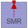

SynchronousInductionMachinesThermal parts of synchronous induction machines |
|
Package Contents
|
Thermal ambient for synchronous induction machine with permanent magnets |
|
|
Thermal ambient for synchronous induction machine with electrical excitation |
|
|  |
Thermal ambient for synchronous induction machine with reluctance rotor |
Information
This information is part of the Modelica Standard Library maintained by the Modelica Association.
Thermal parts for synchronous induction machines